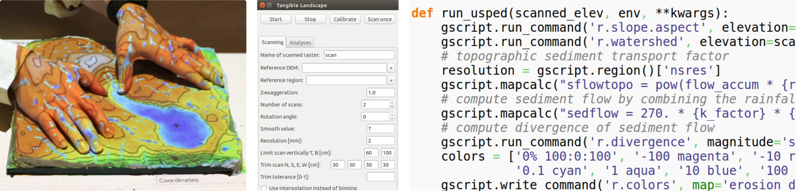

The design and application of tangible user interface for geospatial modeling and analyses
Anna Petrášová
September, 2016
Overview
Tangible Landscape
Urban growth modeling with FUTURES and Tangible Landscape
Seamless fusion of real and virtual DEMs for multi-scale water flow and erosion modeling
The analysis and visualization of
density of people captured by webcams
(project AMOS, the Archive of Many Outdoor Scenes)
Tangible Landscape
Motivation for Tangible Interfaces for GIS
- Interaction through mouse, keyboard and display does not encourage creativity.
- Manipulating computer models is not intuitive and requires specialized software and training.
- Collaboration is restricted as typically only one user at a time can navigate and modify models.


The first tangible interface prototypes


Image source: MIT Media Lab
Illuminating Clay, Sandscape and Tangible Geospatial Modeling System (TanGeoMS)
Ishii H., Ratti C., Piper B., Wang Y., Biderman A. and Ben-Joseph E.
"Bringing clay and sand into digital design—continuous tangible user interfaces." BT technology journal 22.4 (2004): 287-299.
L. Tateosian, H. Mitasova, B. A. Harmon, B. Fogleman, K. Weaver, and R. S. Harmon,
“TanGeoMS: Tangible Geospatial Modeling System,”
IEEE Trans. Vis. Comput. Graph., vol. 16, no. 6, pp. 1605–12, 2010.
Kinect-based systems
Augmented Reality Sandbox by KeckCAVES
Expensive laser scanners replaced by low cost Kinect
Image source: http://idav.ucdavis.edu/
Tangible Landscape: real-time coupling with GIS

Tangible Landscape couples a digital and a physical model through a continuous cycle of 3D scanning, geospatial modeling, and projection.
Research questions (1)
- In order to use real landscapes, we need to link our changes on the physical model to the actual geospatial data. What are the steps and information we need to georeference a model and ensure we run the geospatial analyses at the right location and scale?
- How the limitations of Kinect and other available scanners in terms of the resolution, precision and noise influence the scale of the models and applicability to certain geospatial analyses? Are there ways to compensate for these limitations during the DEM reconstruction or the way we design applications?
Research questions (2)
- Given the available data from Kinect sensor what types of physical interactions can we use to steer geospatial models and how do we translate these interactions into modified inputs to the models?
- What types of geospatial models can be meaningfully linked with tangible interfaces in terms of processing speed and input data? How do we compromise between the realistic setting of the input parameters and the need for real-time feedback and visually engaging results?
- Since physical models cannot be scaled, what are the options to study and interact with multiscale processes?
Tangible Landscape design
- supports wide range of applications (design, decision making, education) in various domains (geology, landscape design, ecology, ...)
- enables using simple to complex geospatial models and algorithms, and allows scientists to develop their workflows
- allows for different interactions to let user input different data into models
- works with landscapes with different geographic scale and extent
- accessible financially and without restrictions
Physical setup
 |
 |
 |
 |
 |
Sensor properties (resolution, FOV), projector properties (resolution, aspect ratio, throw ratio) and the physical setup influence the maximum size of the model and precision.
Kinect data processing 1: georeferencing
- Calibration: automated correction for tilted scanner
- Model extraction: manual bounding box selection, automated edge trimming procedure
- Georeferencing: rotation along Z axis and 3D rotation to correct for tilted scan, horizontal, vertical scaling and translation based on provided DEM
Kinect data processing 2: DEM reconstruction
- Point cloud filtering to remove invalid points and outliers using neighborhood statistics filter
- Noise removal using Moving Least Squares surface reconstruction method
- Raster-based DEM reconstruction:
- binning with filling empty cells - fast, leaves no data values where Kinect can't see
- interpolation using regularized spline with tension - slower
r.in.kinect
GRASS add-on module:
- written in C++
- using open source libraries
- GRASS GIS library
- Point Cloud Library (used in computer vision and robotics)
- libfreenect2 library (open source drivers for Kinect)
- libfreenect2pclgrabber by Giacomo Dabisias
Software

Coupling with GRASS GIS:
- wide range of analyses + cartography
- open source, so we can modify it
- scriptable
Developed library for modeling
- topographic parameters
- surface processes
- designing trails
Interfaces
TUI GUI API
Interactions

| surface | points | lines | areas |
Applications: topographic analysis
| slope |
cut and fill |
erosion |
| landforms | ||
Applications: solar analysis


Solar irradiation and cast shadow
Applications: hydrology (1)
Serious game: save houses from coastal flooding by building coastal defenses
Applications: hydrology (2)
Lake Raleigh dam break simulation
Applications: wildfire spread
Applications: visibility
Applications: 3D soil moisture exploration


Applications: trail planning


Optimized trail routing between waypoints based on walking time, topography, and cost maps with feedback including trail slopes
Applications: termite infestation
Serious game: Manage the spread of termites across a city by treating city blocks using a model of biological invasion in R
Applications: Sudden Oak Death
Manage the spread of SOD in California
Applications: urban growth
Simulation of urban growth scenarios with FUTURES model
Tangible Landscape + Immersive Virtual Reality
Publications
- Tonini F., Shoemaker D., Petrasova A., Harmon B., Petras H., Cobb R. C., Mitasova H. and Meentemeyer R. K. (2016). Using tangible geospatial modeling for collaborative problem-solving: a pilot exercise with an invasive plant pathogen. Submitted to Ecological Modelling.
- Harmon, B. A., Petrasova, A., Petras, V., Mitasova, H., Meentemeyer, R. K. (2016). Tangible Landscape: cognitively grasping the flow of water. In The International Archives of the Photogrammetry, Remote Sensing and Spatial Information Sciences.
- Petrasova, A., Harmon, B., Petras, V., Mitasova, H. (2015). Tangible Modeling with Open Source GIS. Springer.
- Petrasova, A., Harmon, B., Mitasova, H., White, J. (2014). Tangible Exploration of Subsurface Data. Poster at AGU 2014.
- Petrasova, A., Harmon, B., Petras, V., Mitasova, H., (2014). GIS-based environmental modeling with tangible interaction and dynamic visualization. In: Ames, D.P., Quinn, N.W.T., Rizzoli, A.E. (Eds.), Proceedings of the 7th International Congress on Environmental Modelling and Software, June 15-19, San Diego, California, USA.
Workshops, demos and outreach events
- Petrasova, A., Petras, V., Harmon, B. A., Mitasova, H. (2016, May 2). Using GRASS GIS through Python and tangible interfaces. Workshop conducted at FOSS4G North America 2016, Raleigh, NC.
- Harmon, B., Petrasova, A., Petras, V., Mitasova H., Vukomanovic, J., Tonini F., Meentemeyer, R. (2016) Coffee & Viz - Serious Gaming with Tangible Landscape
- NCSU GeoForAll laboratory, Tangible Landscape at the State of the Sciences: Museum Takeover (2016), Nature Research Center at the North Carolina Museum of Natural Sciences.
- NCSU GeoForAll laboratory, Interactive model with coastal flooding serious game at Bald Head Island Conservancy (2016)
Urban growth modeling with FUTURES and Tangible Landscape
Research questions (1)
- FUTURES as a complex spatio-temporal model requires considerable expertise and training for correct data preparation and running the model as it was intended. How can we facilitate urban growth modeling with FUTURES and achieve more reproducible results while at the same time keep the model flexible and not oversimplify the modeling process?
- Previous urbanization studies using original FUTURES model limited the study extent to several counties. Can we study large scale urbanization with FUTURES at the same level of detail as the previous studies but still using commonly available computing infrastructure?
Goals
- make FUTURES open source
- describing models in journal articles does not ensure reproducible results
- peer-review leads to better code and intended model behavior
- model can be extended or adapted and used in different context
FUTURES
FUTure Urban-Regional Environment Simulation
- stochastic, patch-based land change model
- simulates urban growth
- accounts for location, quantity, and pattern of change
- positive feedbacks (new development attracts more development)
- allows spatial non-stationarity


Integration in GRASS GIS
Why choose GRASS GIS and not keep it standalone?
- all needed GIS functions at hand
- efficient I/O libraries
- able to process large datasets
- modular architecture: modules in C/C++ and Python
- automatically generated CLI and GUI
- infrastructure for online manual pages and distribution of binaries
- maintained by community and developers
DEMAND submodel
- projects the rate of per capita land consumption for each simulated year and each subregion
- curve fitting using simple linear regression and by solving non-linear least squares problem (SciPy)
- can select best curve for each subregion based on residuals


Development pressure
- important predictors of where development is likely to happen
- computed as a distance decay function of neighboring developed cells
- moving window analysis with custom designed matrix filters
- precomputing the matrix of distances results in faster processing
- memory efficient

POTENTIAL submodel
- multilevel logistic regression for development suitability surface
- package lme4 for fitting generalized linear mixed-effects models and package MuMIn for automatic model selection

Patch growing algorithm
- stochastically allocates seeds for new development across the development suitability surface
- use of efficient read and write libraries speeds up initialization
- dynamic memory allocation to enable flexible number of predictors and computational extent
- more suitable data types to reduce memory consumption
- replaced a suboptimal linear search method with binary search
- parallelized by (a) running stochastic runs in parallel or (b) splitting by counties, running those in parallel and finally merge back
| FUTURES version | memory | 1 run | 250 runs |
|---|---|---|---|
| original | 1.7 GB | 60 s | 4 h 10 min |
| r.futures | 0.86 GB | 19 s | 1 h 20 min |
Asheville Metropolitan Region, laptop with 64-bit Ubuntu 14.04 LTS, Intel Core i7-4760HQ $@$ 2.10GHz using 1 CPU and running on external hard drive
Patch calibration
- calibrate the input patch compactness and size to match the simulated patterns with the observed patterns from reference period
- distributions of patch shapes and sizes is compared using chi-square distance
- parallelized


Research questions (2)
- How can we integrate FUTURES and similar complex spread simulations such as SOD with tangible geospatial interface? What types of human-computer interactions can we employ to allow intuitive exploration of the model behavior and scenarios?
Scenario modeling
Constraint parameter: zones with decreased probability of development $$P_{new} = P . C, \quad C \in \langle 0, 1\rangle $$Stimulus parameter: zones with increased probability of development $$P_{new} = P + S - P.S, \quad S \in \langle 0, 1 \rangle$$
Future work
- how to deal with stochastic processes?
- adaptive management
Publications
- Petrasova, A., Petras, V., Van Berkel, D., Harmon, B. A., Mitasova, H., and Meentemeyer, R. K. (2016) Open Source Approach to Urban Growth Simulation. Int. Arch. Photogramm. Remote Sens. Spatial Inf. Sci., XLI-B7, 953-959.
- Pickard, B. R., Van Berkel, D., Petrasova, A., Meentemeyer, R. K. Future patterns of urbanization reveal trade-offs among ecosystem. Accepted to Landscape Ecology.
- Petrasova, A., Petras, V., Shoemaker, D. A., Dorning, M. A., & Meentemeyer, R. K. (2015). The integration of land change modeling framework FUTURES into GRASS GIS 7 (2015) In: Brovelli M. A., Minghini M., Negretti M., eds. Geomatics Workbooks. FOSS4G Europe, Como
Planned publication of new version of FUTURES and connection with Tangible Landscape
Workshop
Petrasova A., Petras V., Van Berkel D., Dorning M., Meentemeyer R., Mitasova H. (2016). Spatio-temporal Modeling with Open Source GIS: Application to Urban Growth Simulation using FUTURES. Full-day workshop at US-IALE 2016 Annual Meeting, April 3, 2016, Asheville, NC, USA.
Future work?
- Computational steering of water flow and other fluxes using path sampling library
- Seamless fusion of real and virtual DEMs for multi-scale water flow and erosion modeling
- Coupled tangible geospatial modeling and robotics for collaborative design
Timeline
| this semester | work on FUTURES paper |
| November | short paper on the DEM fusion |
| December | written preliminary exam |
| January - February | oral preliminary exam |